ALIGNMENT PENDING. Teacher-confirmed Evidence comes from witnessed work and explanation.
Session A · Lesson 3
Build the door and matching windows
First suggested 70-minute block; actual novice timing unmeasured. Continue the seated C2 shell.
TODAYSelect, inset, extrude and duplicate the front panels.
01
Check C2 and save a separate C3
IN SHORTGround, walls and roof inspected; C2 preserved.
READ ALOUD
DOCUMENT: Your own C3_Cottage_Details_v03.blend SELECT: own C2 shell / Object Mode TOOLS / ROUTE: File > Open / Save As
EXPLANATION FRAMESI selected ___ in ___ Mode. The normal points ___. I expected ___. I observed ___. I changed ___ and tested ___.
1 · Keep your own cottage chain
Recall first, with the workbook closed: 1. Which mode changes a whole object and which changes its mesh? 2. What stayed unchanged when you selected only the upper roof row? 3. How did you check roof-to-wall contact? Say your answers, then inspect C2.
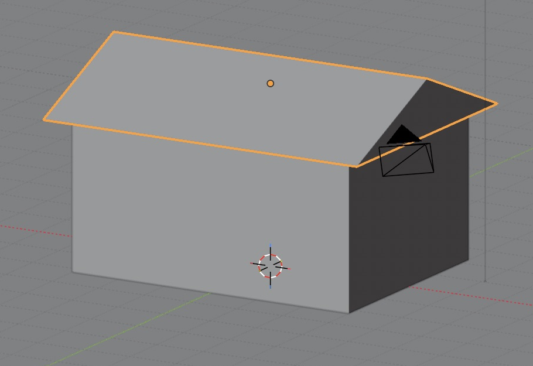
Entry check: your own ground, walls and seated gabled roof; the door, windows and chimney have not been added yet.
1. File > Open your own C2 copy. Confirm Cottage is 6 × 4.5 × 3 m at Z 1.5; Snow ground is at Z 0; Roof base meets wall top Z 3. The ridge runs along X and its end is triangular in Right view.
2. File > Save As C3_Cottage_Details_v03.blend in your approved private project folder. Keep C2 unchanged. Cancel an overwrite warning. A supplied finished file can help comparison, but it is not evidence that you built this cottage.
STEP CHECKLIST
GLOSSARY
Object Mode: Mode for whole-object operations. Example: duplicate a separate window.
Apply Scale: Keep size while resetting scale multipliers to one. Example: use before insetting the sized panel.
Evidence: A teacher-confirmed record from witnessed work, explanation or inspected product. A progress tick is not confirmation.
CHECKGround, walls and roof inspected; C2 preserved.
FIXWrong entry? Return to your own C2 before adding details.
WORKED EXAMPLE · DIFFERENT OBJECTDifferent case: a 0.1 m deep plaque centred at Y −1.06 has its back at Y −1.01, outside a wall front at Y −1.
STRETCH (AFTER THE CHECK PASSES)After the check, change one detail in the separate practice and explain the effect on clearance, border or scale.
02
Place the door outside the wall
IN SHORTDoor reaches ground; back outside front wall; Scale1.
READ ALOUD
DOCUMENT: Your own C3_Cottage_Details_v03.blend SELECT: new Door / Object Mode / N Item TOOLS / ROUTE: Add Mesh Cube; fields; Object > Apply > Scale
EXPLANATION FRAMESI selected ___ in ___ Mode. The normal points ___. I expected ___. I observed ___. I changed ___ and tested ___.
2 · Place a thin door panel
3. In the 3D Viewport choose Add > Mesh > Cube. F2: name it Door. Add in Object Mode so Door is a separate Outliner entry.
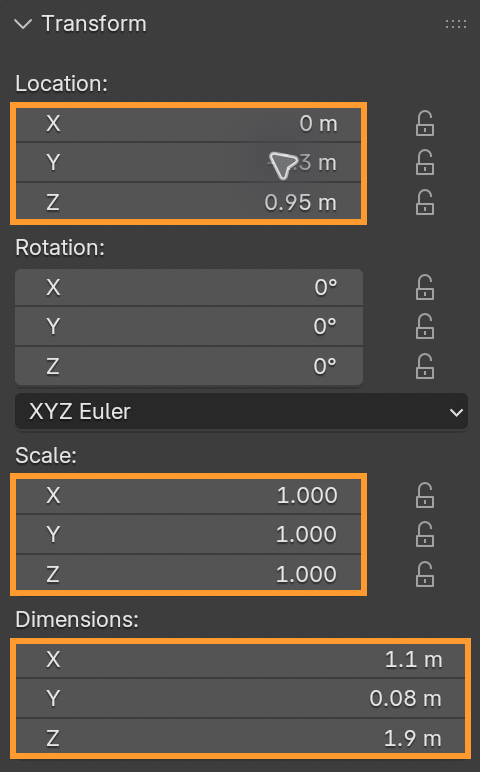
Actual Door readouts. Commit every entry; check the active object name.
4. Set Dimensions X 1.1, Y 0.08, Z 1.9 m. Set Location X 0, Y −2.30, Z 0.95 m. Rotation stays 0°, 0°, 0°. Choose Object > Apply > Scale. Check Scale 1, 1, 1.
Wall front Y −2.25; door back Y −2.26 stays just outside. Its bottom is Z 0: 0.95 − half of 1.9 = 0.
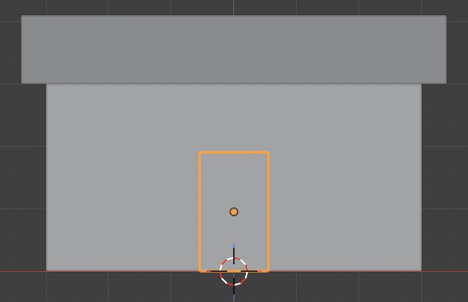
Same state: Door reaches the ground on the whole shell.
WHY: exact size and clearance place the entrance without burying it. CHECK: the panel reaches the ground on the front wall; its object remains separate. FIX: hidden panel? Check Y −2.30 and the active name before changing lights or size.
STEP CHECKLIST
GLOSSARY
Panel: A thin block used here for the door or window study. Example: Door is 0.08 m deep.
Clearance: Small gap that avoids intersection. Example: the door back stays outside the wall front.
Object Mode: Mode for whole-object operations. Example: duplicate a separate window.
Apply Scale: Keep size while resetting scale multipliers to one. Example: use before insetting the sized panel.
CHECKDoor reaches ground; back outside front wall; Scale1.
FIXCheck active name and panel clearance before changing lights.
WORKED EXAMPLE · DIFFERENT OBJECTA plaque against a wall front at Y −1 has depth 0.1 m and centre Y −1.06; its back at Y −1.01 stays outside.
STRETCH (AFTER THE CHECK PASSES)After the check, change one detail in the separate practice and explain the effect on clearance, border or scale.
03
Inset and recess the door front
IN SHORTBorder remains in front; centre recessed inward.
READ ALOUD
DOCUMENT: Your own C3_Cottage_Details_v03.blend SELECT: Door / Front / Edit Mode / Face Select TOOLS / ROUTE: Frame Selected;Alt+A;select front;I0.08;E−0.04
EXPLANATION FRAMESI selected ___ in ___ Mode. The normal points ___. I expected ___. I observed ___. I changed ___ and tested ___.
3 · Select and inset the door front
5. Choose View > Viewpoint > Front (numpad 1). With Door selected choose View > Frame Selected (numpad period). Tab into Edit Mode; choose Face Select, the square icon (ordinary 3). Alt+A deselects, then click only the front face.
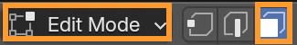
Actual Edit Mode / Face Select controls.
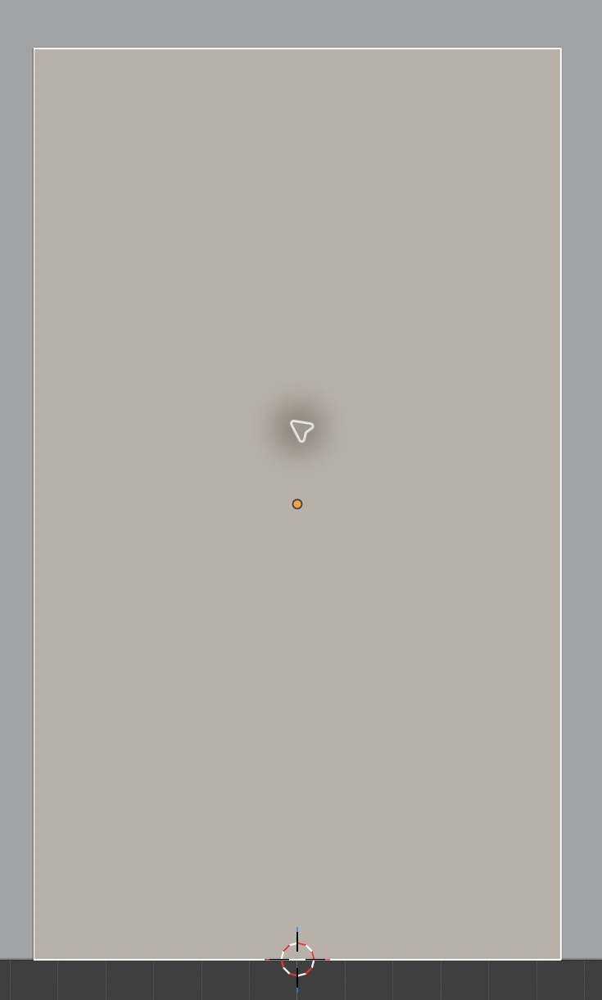
Before: only the front face selected; normal toward −Y.
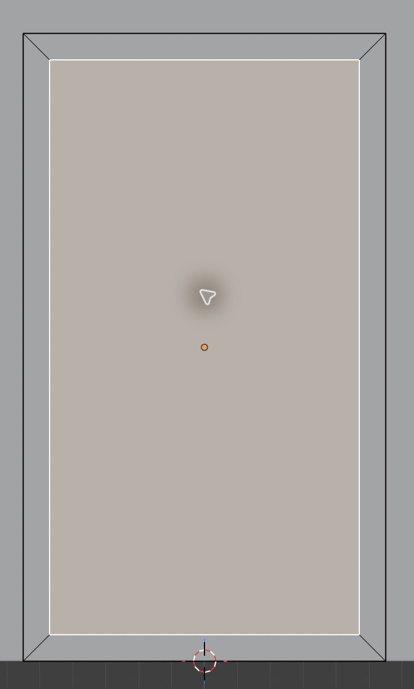
After confirmation: visible border and smaller centre, still level.Actual Inset input: .08 = 8 cm. Confirm with Enter.
6. Press I, type 0.08, Enter. Stop: identify the border and selected centre. Inset makes the frame; it has not made depth yet.
WHY: the selected face controls where the new geometry goes. CHECK: sides unselected; border around one smaller centre. FIX: whole object orange? Check Edit Mode and Face Select. Whole object shrank? Undo the Scale action and use Inset.
4 · Recess the door centre
7. Keep the centre selected. Press E, type −0.04, Enter. Tab returns to Object Mode. Orbit slightly using the C1 navigation controls. Save.
Actual Extrude input: −.04 = −4 cm, along the face normal.
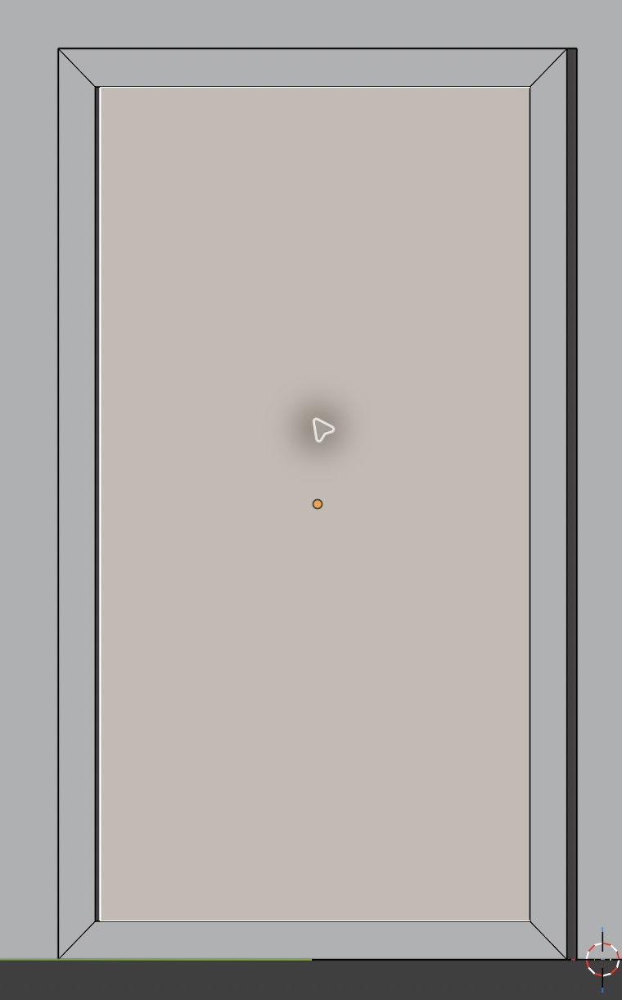
After confirmation: centre behind the original frame. Angled view reveals inner edges.
A face normal points perpendicular to a surface. The door front normal points toward −Y. Negative Extrude goes opposite it, inward toward +Y: the centre moves from Y −2.34 to −2.30. The frame remains at the front.
WHY: a recess needs visible depth while keeping the frame. CHECK: centre behind border, panel still outside wall. FIX: centre sticks outward? Undo and check the negative value and selected face. If an Extrude move was cancelled, undo its overlapping geometry before repeating.
STEP CHECKLIST
GLOSSARY
Face: One surface of a mesh. Example: the door front or chimney top.
Face normal: Direction perpendicular to a face. Example: the door front points toward −Y; the chimney top points toward +Z.
Inset: Create a smaller centre face with a border. Example: I 0.08 on the door front.
Extrude: Create connected geometry and move its new face. Example: E −0.04 recesses the panel centre.
Recess: A surface set back below or behind its surrounding border. Example: the chimney floor at Z 5.3.
Edit Mode: Mode for changing mesh parts. Example: inset one front face.
Face Select: Selection mode for mesh surfaces. Example: highlight only the chimney top.
CHECKBorder remains in front; centre recessed inward.
FIXRecheck face, mode and negative value; undo a cancelled extrusion before repeating.
WORKED EXAMPLE · DIFFERENT OBJECTA different plaque receives a smaller centre face through Inset, then an inward recess; normal determines world direction.
STRETCH (AFTER THE CHECK PASSES)After the check, change one detail in the separate practice and explain the effect on clearance, border or scale.
04
Build and duplicate the window
IN SHORTTwo separately named matching panels at equal height.
READ ALOUD
DOCUMENT: Your own C3_Cottage_Details_v03.blend SELECT: Window L, then copy / Object Mode for duplication TOOLS / ROUTE: Cube; fields; Apply Scale; front Inset/Extrude; Shift+D X 3.8
EXPLANATION FRAMESI selected ___ in ___ Mode. The normal points ___. I expected ___. I observed ___. I changed ___ and tested ___.
5 · Build one recessed window
8. Add > Mesh > Cube in Object Mode. Name it Window L. Dimensions: 1.1 × 0.08 × 1 m. Location: −1.9, −2.30, 1.7 m. Rotation 0°. Object > Apply > Scale; check Scale 1, 1, 1.
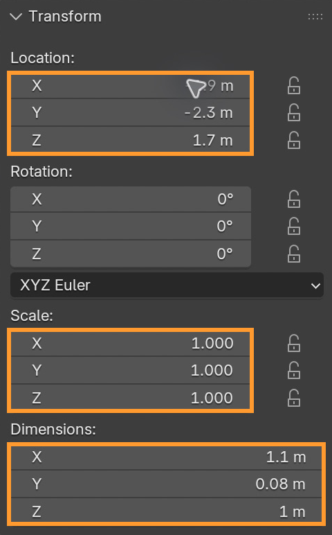
Actual Window L readouts. Check its active Outliner name before editing.
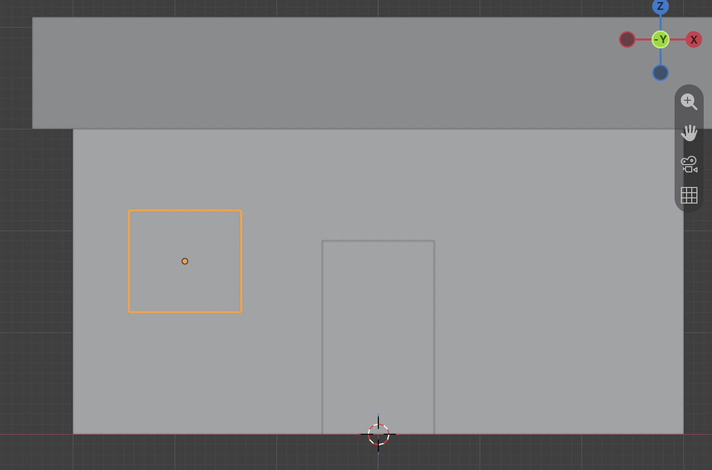
Same state: Window L is a separate panel outside the complete wall/roof shell.
9. Front view; frame Window L. Tab > Edit Mode > Face Select; Alt+A, then select only the front face. Inset I 0.08 Enter. Inspect the border. Keep the centre selected, then E −0.04 Enter. Tab to Object Mode.
WHY: repeat a method you already understand on a smaller panel. CHECK: border and recessed centre, outside the wall. FIX: buried centre? Check front clearance and face choice. These are opaque panel studies; a lamp behind the solid wall will not shine through them.
5b · Recess the first window
Perform action 9 one change at a time: select only the front face; Inset 0.08 m and inspect the border; keep the centre selected, then Extrude −0.04 m. Compare the separate confirmed states below.
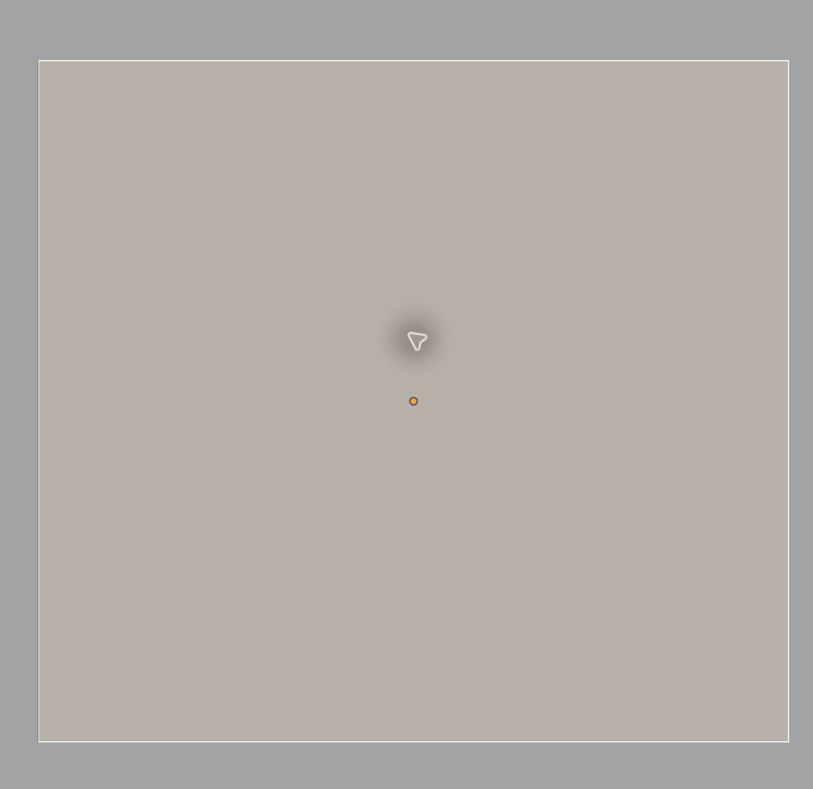
Before: only the front face selected.
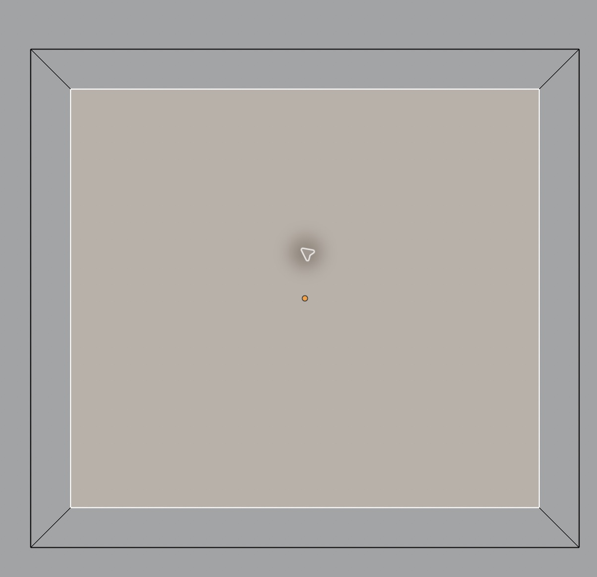
Inset confirmed: smaller centre and border.
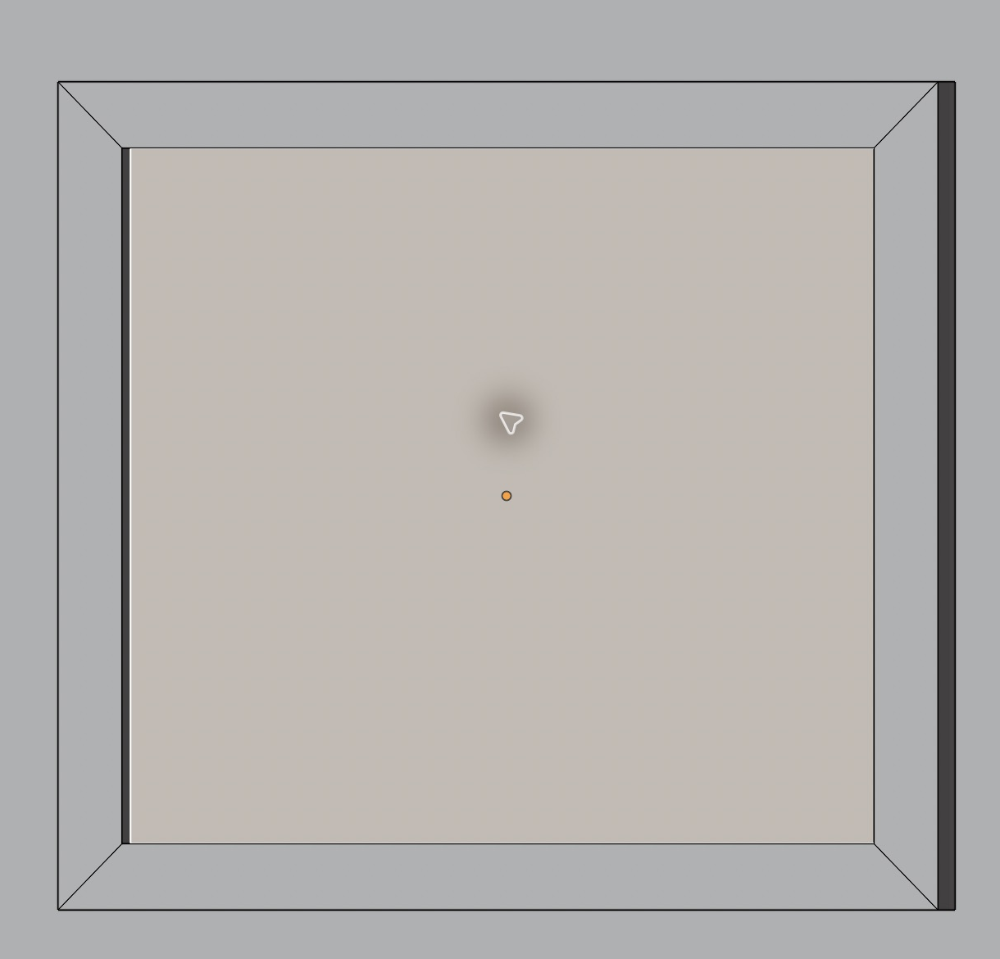
Extrude confirmed: inner edges visible at an angle.Actual Inset input: .08 = 8 cm. Confirm before the next tool.Actual Extrude input: −.04 = −4 cm. Negative moves inward.
CHECK: the centre is behind the unchanged frame; Window L remains outside the wall. FIX: wrong surface changed? Undo, verify Face Select, deselect and choose only the front face. Return to Object Mode before duplicating.
6 · Duplicate a matching second window
10. Confirm Object Mode and only Window L selected. Shift+D, X, 3.8, Enter. F2: name the copy Window R. Check Location X 1.9, Y −2.30, Z 1.7 m. Save.
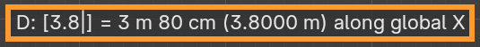
Actual Shift+D displacement input: 3.8 m along global X. Confirm with Enter.
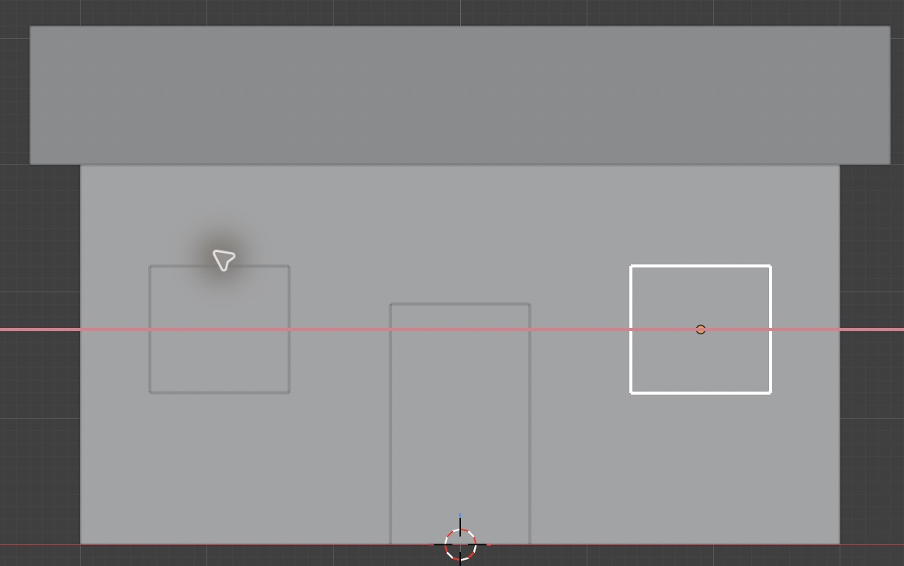
Actual duplicate preview before confirmation; both panels and Door are visible. The reopened final inspection checks the saved pair.
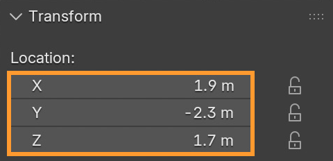
Actual Window R Location: 1.9, −2.30, 1.7 m.
The X separation is 1.9 − (−1.9) = 3.8 m. Duplicate preserves the completed mesh. Select each window by its Outliner name to check that they are separate objects.
WHY: reuse the completed method, then make the placement intentional. CHECK: matching heights and recesses. FIX: both move as one? Undo and verify Object Mode and single-object selection before repeating.
STEP CHECKLIST
GLOSSARY
Panel: A thin block used here for the door or window study. Example: Door is 0.08 m deep.
Inset: Create a smaller centre face with a border. Example: I 0.08 on the door front.
Extrude: Create connected geometry and move its new face. Example: E −0.04 recesses the panel centre.
Clearance: Small gap that avoids intersection. Example: the door back stays outside the wall front.
Duplicate: Create another editable object from the selected object. Example: Window R from Window L.
Object Mode: Mode for whole-object operations. Example: duplicate a separate window.
CHECKTwo separately named matching panels at equal height.
FIXUndo; check Object Mode and only Window L selected.
WORKED EXAMPLE · DIFFERENT OBJECTTwo different panels at X −1.2 / +1.2 use a 2.4 m duplicate move.
STRETCH (AFTER THE CHECK PASSES)After the check, change one detail in the separate practice and explain the effect on clearance, border or scale.
Session B · Lesson 3 continued
Finish the chimney and inspect the details
Second suggested 70-minute block; actual novice timing unmeasured. Continue the same C3 file.
TODAYTop-face rim/recess, three small bevels, changed practice and reopen.
05
Place the chimney and select its top
IN SHORTTop face only, normal +Z; chimney extends through roof.
READ ALOUD
DOCUMENT: Your own C3_Cottage_Details_v03.blend SELECT: Chimney / above / Edit Mode / Face Select TOOLS / ROUTE: Cube; fields; Apply Scale; Frame Selected; select only top
EXPLANATION FRAMESI selected ___ in ___ Mode. The normal points ___. I expected ___. I observed ___. I changed ___ and tested ___.
7 · Place and select the chimney
11. Add a Mesh Cube in Object Mode; name it Chimney. Dimensions: 0.7 × 0.7 × 2.4 m. Location: 1.9, 1.1, 4.4 m. Rotation 0°. Apply Scale; check 1, 1, 1.
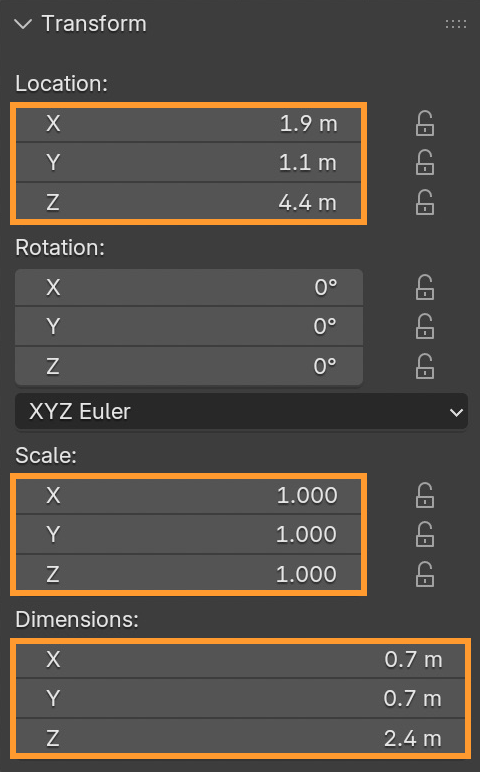
Actual Chimney values. The top is Z 4.4 + 1.2 = 5.6.
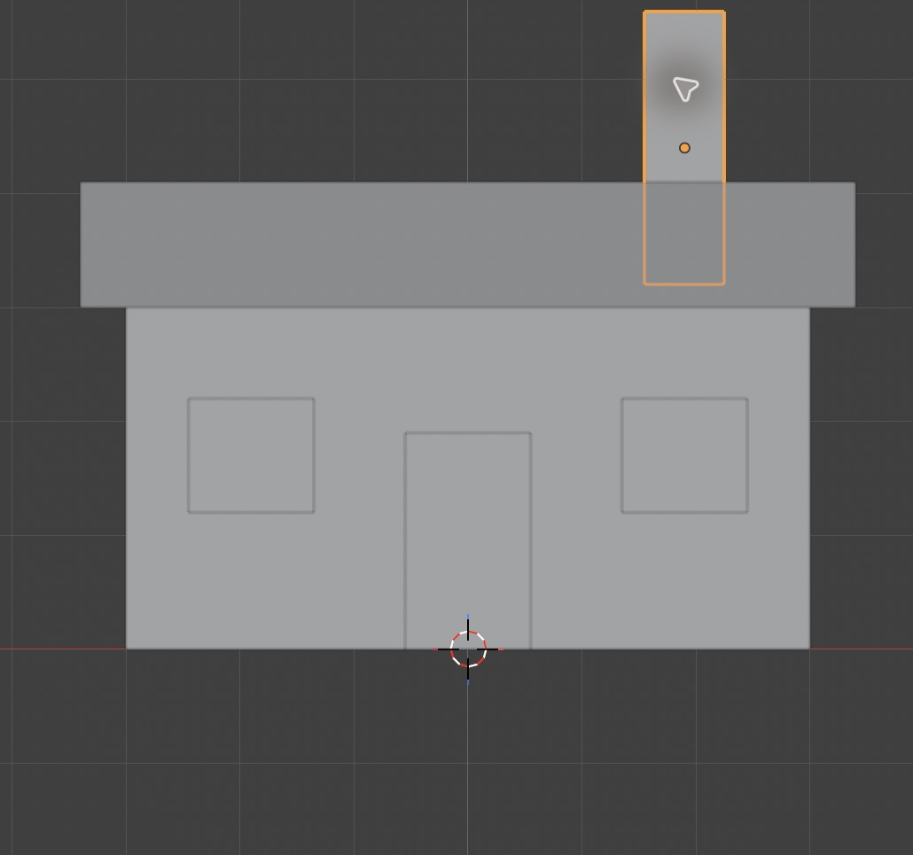
Same state as the readouts: whole cottage with Chimney extending through its roof.
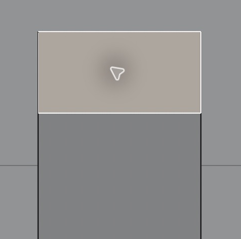
Above close view: only the top face selected.
12. View > Frame Selected. Orbit above until the top square is clear. Tab > Edit Mode > Face Select. Alt+A, then click only the top. Its normal points upward along +Z.
WHY: the correct face makes the recess travel in the intended direction. CHECK: one top face, not a side or the whole object. FIX: selected a side? Orbit higher, deselect, and click the top again.
STEP CHECKLIST
GLOSSARY
Face: One surface of a mesh. Example: the door front or chimney top.
Face normal: Direction perpendicular to a face. Example: the door front points toward −Y; the chimney top points toward +Z.
Edit Mode: Mode for changing mesh parts. Example: inset one front face.
Face Select: Selection mode for mesh surfaces. Example: highlight only the chimney top.
Apply Scale: Keep size while resetting scale multipliers to one. Example: use before insetting the sized panel.
CHECKTop face only, normal +Z; chimney extends through roof.
FIXOrbit higher, deselect and restore top-only selection.
WORKED EXAMPLE · DIFFERENT OBJECTA 1.2 m tall vent centred Z 3 has top Z 3.6; its top normal points up.
STRETCH (AFTER THE CHECK PASSES)After the check, change one detail in the separate practice and explain the effect on clearance, border or scale.
06
Inset the rim and extrude down
IN SHORTInner 0.5 m; rim Z 5.6; floor Z 5.3; visible inner walls.
READ ALOUD
DOCUMENT: Your own C3_Cottage_Details_v03.blend SELECT: Chimney / selected top then inner face TOOLS / ROUTE: I 0.1; inspect; E −0.3; orbit; Object Mode
EXPLANATION FRAMESI selected ___ in ___ Mode. The normal points ___. I expected ___. I observed ___. I changed ___ and tested ___.
8 · Make the chimney rim and recess
13. With the top selected: I 0.1 Enter. Stop and inspect the rim. Keep the smaller centre selected. 14. E −0.3 Enter. Orbit slightly, then Tab to Object Mode and save.
Actual Inset input: .1 = 10 cm.Actual Extrude input: −.3 = −30 cm.
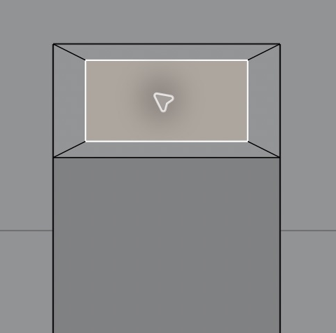
Inset confirmed: 0.1 m rim around a 0.5 m centre, still at Z 5.6.
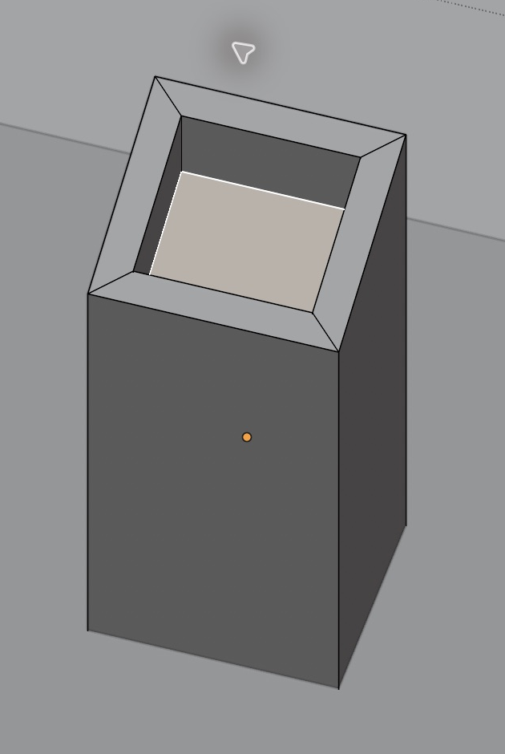
Extrude confirmed: floor Z 5.3, high rim and visible inner walls.
WHY: Inset defines the rim before Extrude makes depth. A 0.7 m top minus two 0.1 m borders leaves 0.5 m. The top normal points up, so a negative extrusion goes down. This is a shallow recess, not an open flue through the cottage.
CHECK: rim, four inner walls and floor visible separately. FIX: centre rises? Undo and use −0.3. No depth? Check that the number was confirmed. An above angled view reveals more than a straight front view.
STEP CHECKLIST
GLOSSARY
Face normal: Direction perpendicular to a face. Example: the door front points toward −Y; the chimney top points toward +Z.
Inset: Create a smaller centre face with a border. Example: I 0.08 on the door front.
Extrude: Create connected geometry and move its new face. Example: E −0.04 recesses the panel centre.
Rim: Border surrounding a recess. Example: the 0.1 m chimney top border.
Recess: A surface set back below or behind its surrounding border. Example: the chimney floor at Z 5.3.
EXPLANATION FRAMESI selected ___ in ___ Mode. The normal points ___. I expected ___. I observed ___. I changed ___ and tested ___.
9 · Soften three main parts
15. Select Cottage alone; check Scale 1, 1, 1. Modifier Properties (wrench) > Add Modifier > Generate > Bevel. Set Amount 0.02 m and Segments 2. Keep the modifier editable; do not Apply it.
Whole cottage after the three small bevels; roof and chimney remain readable.
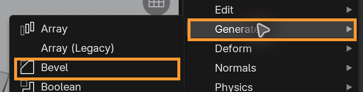
Actual Add Modifier > Generate > Bevel route.
16. Repeat separately for Roof and Chimney. Check the active name each time. Toggle one bevel’s viewport visibility off/on to compare; save.
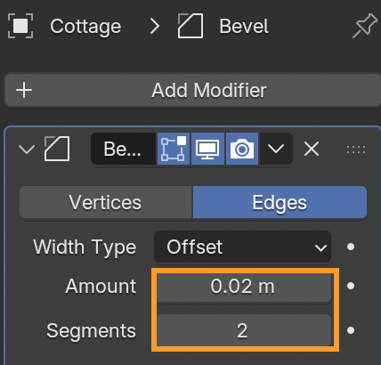
Cottage: its own 0.02 m / 2-segment Bevel.
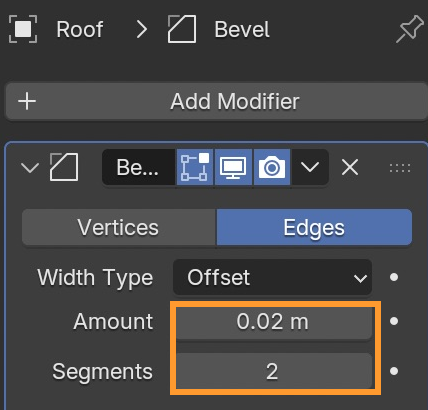
Roof: its separate 0.02 m / 2-segment Bevel.
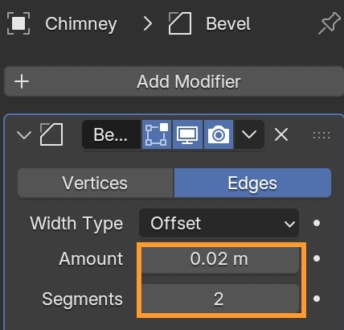
Chimney: its separate 0.02 m / 2-segment Bevel.
CHECK: all three have their own editable Bevel; roof stays triangular and seated. FIX: one part remains sharp? Inspect that object’s list. Bevel is a finishing pass; it cannot repair the wrong roof geometry.
10 · Inspect the saved whole cottage
17. Inspect from Front, a roof end and an above angle. Check the door reaches the ground; two windows are outside the wall at equal height; the chimney rim and recess are readable; the roof remains seated. Select each name in the Outliner.
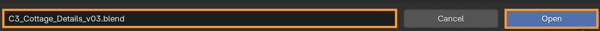
Actual filename and Open button. Use your own approved lesson folder.Actual reopened C3: orbit inspection reveals roof slope and chimney recess.
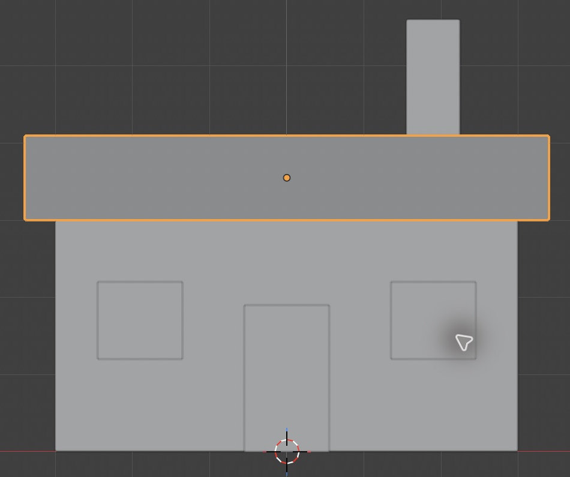
Later final Front inspection: door and paired windows fully visible. This is the finished C3 inspection.
18. File > Save. File > Open the exact C3 file in your private folder. Repeat the full inspection. Keep this original cottage checkpoint for materials, settled snow and lighting. Do not overwrite it with the separate practice.
WHY: the next lesson depends on a recoverable detailed cottage. CHECK: same filename, names and visible geometry after reopening. FIX: missing detail? Check the exact folder/version, then return to the last valid checkpoint and repair the affected step.
Your changed detail brief
Open your separate C2_Storage_Roof_Practice_v03.blend and Save As C3_Storage_Details_Practice_v04.blend. Keep your original cottage unchanged. The director wants a narrower entrance and a pair of windows on a different-sized front wall. Choose sensible panel sizes, front-wall clearance, border widths and window spacing. Create the framed entrance with Inset and negative Extrude, then build one recessed window and duplicate it in Object Mode. Add a separate small vent with a visible inset rim and downward recess. Use a small editable Bevel on the storage body, roof and vent. Keep every part attached without intersections. Save and reopen. Show the selected faces, explain your decisions and adapt when the teacher changes one panel size. No finished answer is supplied.
Different-case model
A wall front at Y −1 with a 0.1 m plaque centred at −1.06 has its back at −1.01, just outside the wall. Two panels at X −1.2 and 1.2 need a 2.4 m duplicate move. A 0.8 m planter top with a 0.1 m rim leaves a 0.6 m centre. These examples teach relationships, not the answer to your storage brief.
My chosen panel sizes, clearance and window spacing: __________ My rim/recess and small bevel decision: _____________________ Intended result → observed mismatch → likely cause → one change → test: ________________________________________________________
Show Me: demonstrate one front-face recess and one top-face recess; explain their directions; select the separate windows; show the saved/reopened whole cottage; adapt to a changed panel size.
Check the method before moving on
E3 · Panels and matching windows 1. Why is the door panel centred at Y −2.30 rather than inside the wall?
2. What changes after Inset I 0.08, and what extra change does E −0.04 make?
3. Why does a negative extrusion on the door front move toward positive Y?
4. Why return to Object Mode before Shift+D, X, 3.8?
5. A recessed panel vanishes. What should you inspect before changing the light?
E4 · Chimney rim and bevel 1. Why does I 0.1 leave a 0.5 m inner square in the 0.7 m chimney top?
2. After E −0.3, what are the rim and floor heights? Why does the centre go down?
3. Why select Cottage, Roof and Chimney separately for Bevel?
4. What should you check before and after a 0.02 m, 2-segment Bevel?
5. Why reopen the exact C3 file and inspect above as well as from the front?
Keep a private prompt-and-answer backup. Local notes and progress ticks do not submit work or establish achievement. Date and school collection destination remain teacher-confirmation pending.
STEP CHECKLIST
GLOSSARY
Object Mode: Mode for whole-object operations. Example: duplicate a separate window.
Modifier: Editable operation affecting displayed geometry. Example: each house part has its own Bevel.
Bevel: A small strip that softens a sharp edge. Example: Amount 0.02 m and Segments 2.
Evidence: A teacher-confirmed record from witnessed work, explanation or inspected product. A progress tick is not confirmation.
CHECKEach small editable Bevel; all required details survive reopen.
FIXInspect the named object’s modifier; a large bevel cannot fix a wrong ridge.
WORKED EXAMPLE · DIFFERENT OBJECTA separate body and lid each need their own small editable Bevel.
STRETCH (AFTER THE CHECK PASSES)After the check, change one detail in the separate practice and explain the effect on clearance, border or scale.
Before you submit
Student QA.
Evidence conversation
Keep it short and specific.
SENTENCE FRAMESI selected ___ in ___ Mode. The normal points ___. I expected ___. I observed ___. I changed ___ and tested ___.
Sources and authorship
Method references.
Photo credits
Figures marked Illustration are drawn, not screenshots. Step values are starting points authored for this project. Draft for teacher review; not yet classroom-piloted.
Keep a local practice draft.
Keep a private downloaded backup. Local practice does not submit to a teacher; school collection remains unverified.